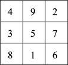
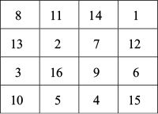
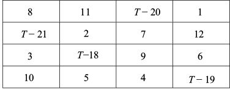
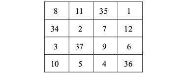
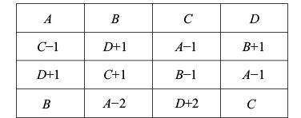
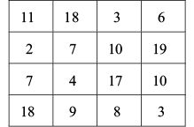
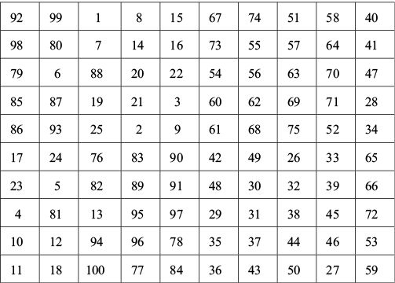

为了感谢大家的一路相伴，在本书即将结束之际，我请大家再感受一次数学的神奇。这次体验与无穷大无关，但同样神奇，它就是“幻方”（magic square）。幻方是由数字组成的方形表格，每行、每列和对角线上的数字之和都相等。下图是众所周知的3×3幻方，其中每行、每列和每条对角线上的数字之和都等于15。

幻方还有一个不为人所知的特性，我称为“平方回文特性”。首先，把各行与各列的三个数字分别看成三位数，然后求它们的平方和，就会发现：
4922 + 3572 + 8162 = 2942 + 7532 + 6182
4382 + 9512 + 2762 = 8342 + 1592 + 6722
某些“泛”对角线也有类似现象，例如：
4562 + 3122 + 8972 = 6542 + 2132 + 7982
这真是太神奇了！
最简单的4×4幻方（如下图所示）使用的是1~16的数字，所有行、列及对角线的幻和值都是34。数学家和魔术师都喜欢4×4幻方，因为他们可以通过几十种方法算出幻和值。比如，在下图这个幻方中，所有行、列和对角线的和都是34。同时，幻方中所有的2×2正方形[包括左上角的1/4区域（8，11，13，2）、中间四格、幻方的四个角，等等]中的4个数字的和也是34。此外，就连泛对角线以及幻方内所有3×3正方形的顶点之和也是34。

你是不是对某个大于20的两位数情有独钟？你可以用这个数字T作为幻和值，轻而易举地设计一个幻方。选择1~12的数字，再加上T – 18、T – 19、T – 20和T – 21这4个数字，按下图所示方式填入各个方格，就搞定了。

以幻和值 T = 55的幻方为例（如下图所示）。上例中和为34的所有四数集合，只要这4个数字中正好包含一个（而不能是两个或0个）含有变量T的方格，它们的和就一定是55。因此，右上角的正方形符合条件（35 + 1 + 7 + 12 = 55），而中间偏左的正方形则不符合条件（34 + 2 + 3 + 37 ≠ 55）。

并不是所有人都喜欢某个两位数，但是所有人都会记住自己的生日，而且我发现很多人喜欢用生日数字作为幻和值，设计出个性化的幻方。下面，我向大家介绍一种“双生日”幻方设计法，让自己的生日出现两次，分别位于第一行和4个角。假设你的生日是由A、B、C、D这4个数字构成的，我们可以按照下述方式设计这个幻方。请大家注意观察，幻方的各行、各列、各条对角线和几乎所有的2×2正方形中的数字之和，都是幻和值 A + B + C + D。

我的母亲是1936年11月18日出生的，用这些数字可以设计出下面这个幻方：

现在，请大家用自己的出生日期设计一个幻方吧。按照上面的介绍，实现的方法应该超过36种，试试看你能找出多少种吧。
4×4幻方的组合方式最多，不过，运用特定的方法，人们可以设计出更高阶的幻方。例如，下面是一个10×10幻方，使用了1~100的所有数字。

如果不进行计算，你能说出这个幻方的各行、各列和各条对角线的数字之和是多少吗？当然可以！我们早就证明了1~100的数字之和为5 050，那么幻方的各行之和必然是5 050的1/10。因此，这个幻方的幻和值肯定是5 050/10 = 505。本书从讨论1~100的数字求和问题开始，现在又以同样的问题结束，似乎是一个不错的选择。恭喜你已经读完了这本书，对此我深表感谢。本书探讨了数学领域的大量内容、观点和解决问题的方法。当你再一次通读本书或者阅读涉及数学思维的其他著作时，如果你觉得我介绍的知识对你有帮助、值得研究，或者让你感受到了数学的神奇和美丽，我将深感欣慰。